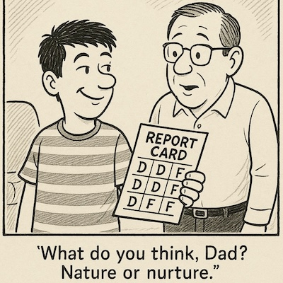

Nature vs Nurture
Russ Roberts is a fantastic explorer of human condition, though an economist by trade, his podcast Econtalk has an extraordinary collection of high quality discussions around all aspects of life.
In this specific episode Nature vs Nurture, he talks with psychologist Paul Bloom about the widely debated topic of Nature vs Nurture, how it applies across different domains, interesting observations around it.
What got me was an excellent joke and a profound question at the same time.

* Credits: Joseph Telushkin, Image generated by: ChatGPT
Some quotes that struck with me during the convo:
-
People in the behavioral genetics field say parents have this enormous influence on their kids. Unfortunately, most of it is in the moment of conception.
-
we so desperately want to believe that how we parent our kids makes all the difference.
-
And, I think the answer is it has to be part of the way people can change. People can --introverts can become more sociable. Sad people can get more happy. But it is harder for them.
-
And I think this is a question which, by the way, psychologists have absolutely no answer to, but what does one do with one's strengths and weaknesses? Does one work on one's strengths, one's weaknesses?
-
I'm really bad at so many things and good at a small number of things, and I have successfully managed to tailor my life, that my contorted shape fits in the contours of my life
There is lot more interesting discussion around equality and fairness as well.